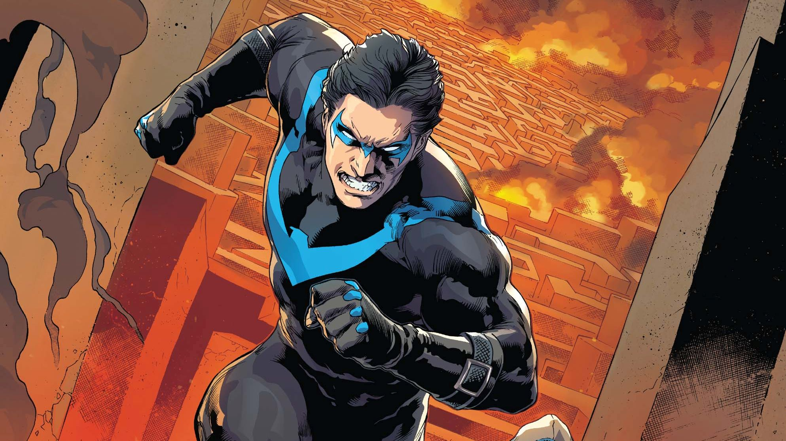
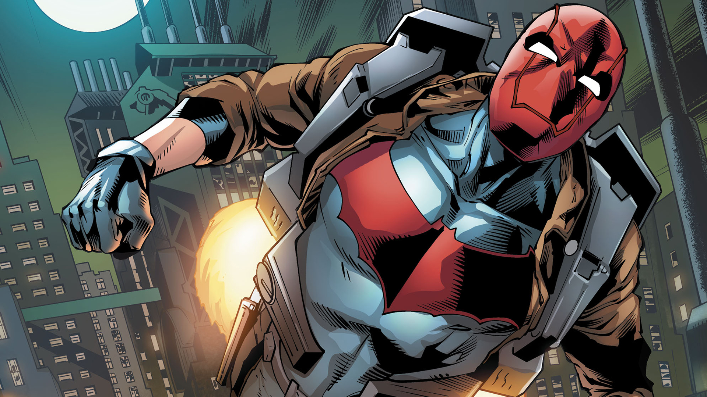

The Batman Family

Batman The Dark Night, Status: Leader
Batman, also known as ******, is a billionaire
philanthropist and the vigilant protector of Gotham City.
After witnessing the murder of his parents as a child, he
dedicates his life to fighting crime. Unlike many
superheroes, Batman possesses no superhuman abilities;
instead, he relies on his intellect, peak physical
conditioning, martial arts expertise, and an array of
high-tech gadgets. Operating from the shadows, he strikes
fear into the hearts of criminals as the enigmatic Dark
Knight.
- Genius-Level Intellect: Batman is a master strategist and detective, often referred to as "the world's greatest detective."
- Peak Physical Condition: He has trained his body to the pinnacle of human potential, excelling in strength, agility, and endurance.
- Expert Martial Artist: Batman is highly skilled in multiple forms of combat, making him a formidable hand-to-hand fighter.
- Advanced Technology: Equipped with cutting-edge gadgets, vehicles, and the Batcave, Batman can tackle a wide range of threats.
- Unyielding Willpower: His determination and mental fortitude allow him to overcome extreme physical and psychological challenges.
Batarang, Grapple Gun, Utility Belt, Batmobile, Bat-Signal,
Smoke Pellets, Explosive Gel, Cryptographic Sequencer,
Bat-Suit, Taser Gauntlets, Batcomputer, Night Vision Lenses,
Sonic Emitter, Flashbang Grenades, Batplane (or Batwing).

Nightwing The Vigilante of Blüdhaven, Status: Co-Leader
Nightwing, also known as *****, was the first Robin,
Batman's original sidekick. After leaving the role of Robin,
he forged his own path as Nightwing, becoming a skilled and
independent vigilante. Operating mainly in the city of
Blüdhaven, Nightwing is known for his acrobatic prowess,
tactical intelligence, and strong moral compass. He fights
to protect the innocent and uphold justice, often stepping
out of Batman's shadow to lead his own missions and even the
Teen Titans.
- Expert Acrobat: A former circus performer, Nightwing is incredibly agile, with unmatched acrobatic skills that give him an edge in combat and mobility.
- Master Martial Artist: Trained by Batman and other martial arts masters, Nightwing is a skilled hand-to-hand combatant.
- Leadership Skills: Nightwing is a natural leader, often taking charge of teams like the Teen Titans and leading them effectively in various missions.
- Strong Moral Compass: He has a deep sense of justice and compassion, which guides his actions and makes him a respected hero.
Escrima Sticks, Wing-Dings, Grapple Gun, Nightwing Suit,
Utility Belt, Glider Cape.

Red Hood The Anti-Hero Vigilante, Status: Member
Red Hood, the second Robin, was brutally murdered by the
Joker but later resurrected through the Lazarus Pit. After
returning from the dead, he adopted the identity of Red
Hood, becoming a more ruthless and morally ambiguous
vigilante. Unlike his former mentor, Batman, Red Hood isn't
afraid to use lethal force, targeting criminals with a
brutal efficiency. He operates on the edge of Gotham's moral
landscape, often clashing with other heroes due to his
methods, but he remains dedicated to his own sense of
justice.
- Lethal Combat Skills: Trained by Batman and honed through his own experiences, Red Hood is a master of hand-to-hand combat and weaponry, with a willingness to kill if necessary.
- Expert Marksman: Red Hood is highly skilled with firearms, making him a deadly shot in both close and long-range combat.
- Tactical Intelligence: a strategic thinker, often outmaneuvering his enemies with careful planning and psychological insight.
- Resilience: Having been resurrected, Red Hood possesses a high tolerance for pain and a relentless determination to achieve his goals.
Dual Handguns, Red Hood Helmet, Combat Knives, Explosives,
Utility Belt, Motorcycle.